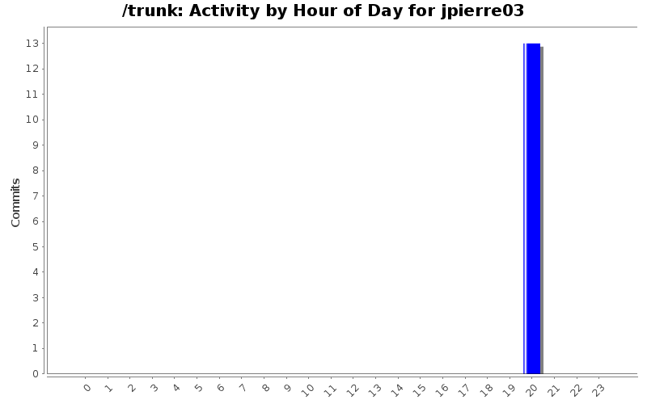
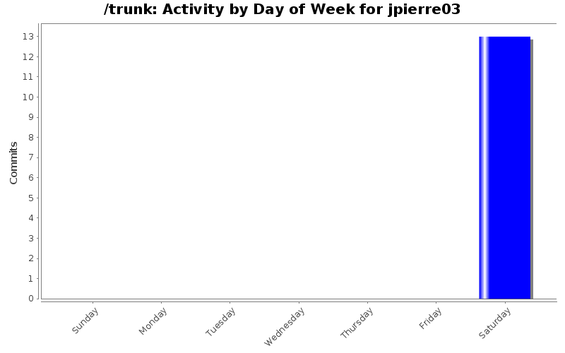
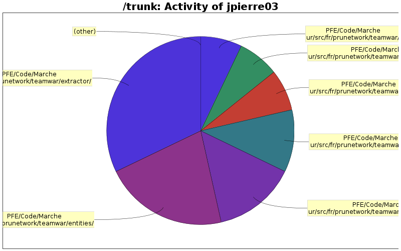

| Directory | Changes | Lines of Code | Lines per Change |
|---|---|---|---|
| Totals | 13 (100.0%) | 56 (100.0%) | 4.3 |
| PFE/Code/Marcheur/src/fr/prunetwork/teamwar/extractor/ | 4 (30.8%) | 18 (32.1%) | 4.5 |
| PFE/Code/Marcheur/src/fr/prunetwork/teamwar/entities/ | 3 (23.1%) | 12 (21.4%) | 4.0 |
| PFE/Code/Marcheur/src/fr/prunetwork/teamwar/storage/reader/ | 2 (15.4%) | 8 (14.3%) | 4.0 |
| PFE/Code/Marcheur/src/fr/prunetwork/teamwar/example/ | 1 (7.7%) | 6 (10.7%) | 6.0 |
| PFE/Code/Marcheur/src/fr/prunetwork/teamwar/utilities/ | 1 (7.7%) | 4 (7.1%) | 4.0 |
| PFE/Code/Marcheur/src/fr/prunetwork/teamwar/storage/writer/ | 1 (7.7%) | 4 (7.1%) | 4.0 |
| PFE/Code/Marcheur/src/fr/prunetwork/teamwar/ | 1 (7.7%) | 4 (7.1%) | 4.0 |

+ Changement de mon nom d'auteur par un pseudo (adresse mail en fait)
(suite à la demande de l'équipe Team-W@R)
56 lines of code changed in 13 files: